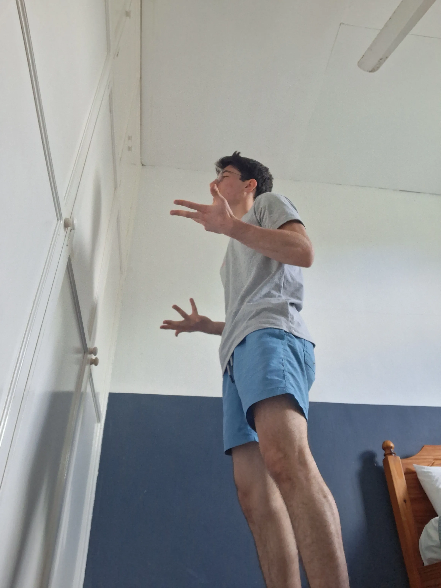
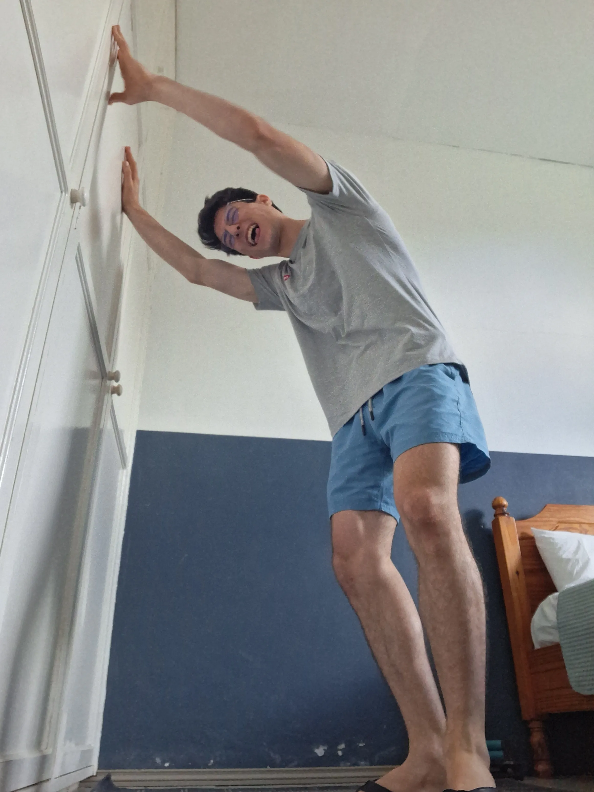
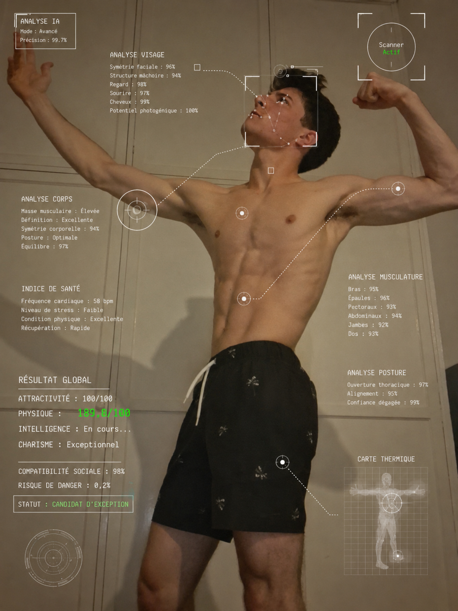
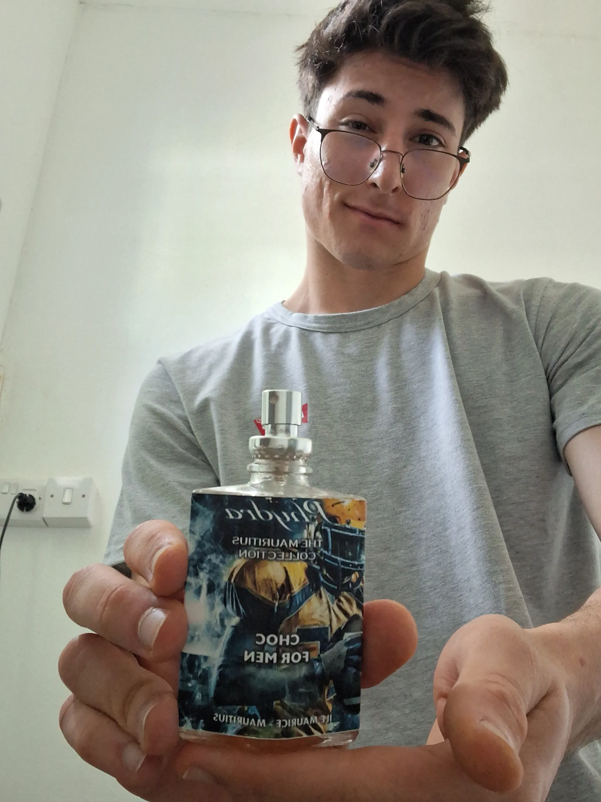
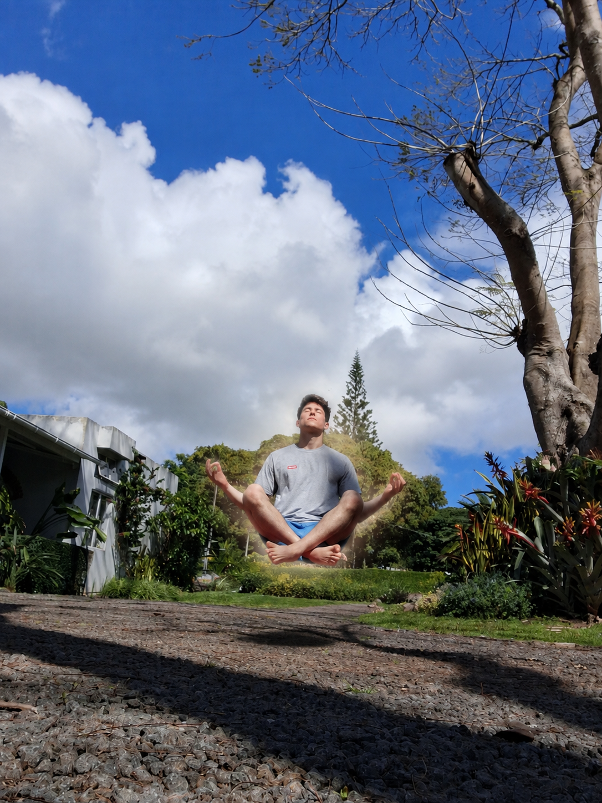
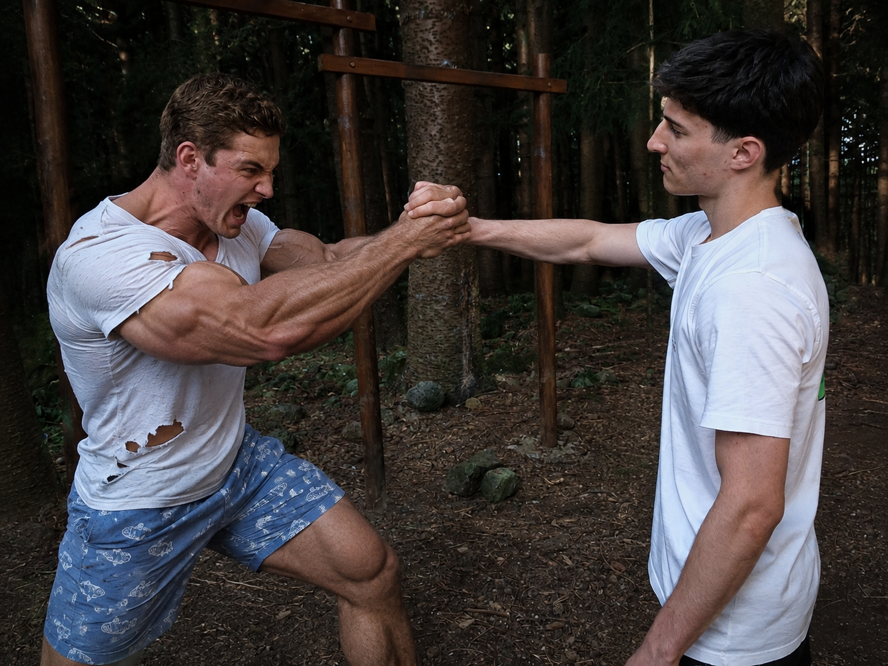

Dossier de candidature
Accès confidentiel — usage réservé à la famille
| Candidat | Christopher de Coriolis |
| Poste convoité | Digne de fréquenter Athina |
| Type de contrat | Durée indéterminée |
| Salaire demandé | 0 € |
| Avantages | Bonne humeur garantie |
⚠️ Attention : ce dossier contient des informations extrêmement compromettantes sur le candidat susmentionné.
🧪 Présentation du candidat
| Nom | Christopher de Coriolis |
| Date d'anniversaire | 13 juillet 2005 |
| Taille | Un peu plus qu'un mètre soixante-dix |
| Nationalité | Maurice 🇲🇺 et Australie 🇦🇺 |
| Études | Ingénieur en énergie électrique, en formation |
| Expérience en séduction | Données confidentielles |
| Expérience face aux frères protecteurs | ⭐⭐⭐⭐⭐ |
Objectif professionnel :
Faire rire Athina suffisamment longtemps pour qu'elle oublie mes défauts.
🧠 Pourquoi Christopher ?
Compétence n°1 — Intelligent

ANALYSE INTELLECTUELLE
| Problème présenté au candidat | Addition de deux quantités identiques |
| Temps de réflexion | Confidentiel |
| Méthode utilisée | Non comprise par les analystes |
| Réponse finale | 5 |
Conclusion scientifique : le candidat semble capable de dépasser les limites traditionnelles des mathématiques.
Score : 97/100
Compétence n°2 — Drôle
ANALYSE DE L'HUMOUR
| Nombre de blagues produites | Difficile à mesurer |
| Nombre de personnes ayant ri | Résultats variables selon les témoins |
| Blagues refusées par le comité | Dossier classifié |
Sources ayant confirmé que Christopher est drôle :
Christopher · Christopher · Une source indépendante dont l'identité doit rester confidentielle
Conclusion : le candidat présente une forte propension à faire des blagues, y compris lorsqu'aucune n'était nécessaire.
Score : 98/100



🧪 Analyse du sujet d'entraînement
Le candidat a été observé en train de tester ses blagues sur un mur.
Après plusieurs observations, il semblerait que Christopher utilise régulièrement ce mur comme cobaye humoristique. Le mur serait donc le premier à subir les nouvelles blagues avant leur diffusion auprès du public.
| Nombre de blagues testées sur le mur | Inconnu |
| Nombre de réactions du mur | 0 |
| Nombre de fois où le mur a demandé d'arrêter | 0 |
| Nombre de fois où le mur a essayé de partir | 0 |
| Tolérance du cobaye | 100/100 |
| Capacité du cobaye à quitter l'expérience | 0/100 |
| Consentement du cobaye | Non confirmé |
Conclusion de l'expérience : le candidat semble avoir développé une méthode d'entraînement consistant à soumettre ses blagues à un public incapable de partir. Cette méthode permet d'obtenir un environnement de test particulièrement peu critique.
Compétence n°3 — Beau

ANALYSE ESTHÉTIQUE TERMINÉE
| Symétrie faciale | 96 % |
| Structure de la mâchoire | 94 % |
| Regard | 98 % |
| Sourire | 97 % |
| Cheveux | 99 % |
| Potentiel photographique | 100 % |
| Esthétique du corps | 189,8 / 100 |
Le système a rencontré plusieurs difficultés à déterminer un score supérieur à 100. Après consultation des autorités compétentes, le résultat du visage a été plafonné — celui du corps, en revanche, a dépassé toutes les échelles connues et n'a pas pu être corrigé à temps.
BEAUTY SCORE
100 / 100
Résultat certifié par une intelligence artificielle totalement impartiale.
Intelligence artificielle développée et entraînée par Christopher.
Compétence n°4 — Sportif
STATISTIQUES ATHLÉTIQUES
| Endurance | 96 / 100 |
| Vitesse | 88 / 100 |
| Agilité | 95 / 100 |
| Explosivité | 86 / 100 |
| Coordination | 93 / 100 |
| Technique | 40 / 100 |
| Résistance | 92 / 100 |
| Puissance musculaire | 76 / 100 |
| Capacité à prétendre que ce n'était pas difficile après avoir souffert | 100 / 100 |
Spécialité principale : endurance, vitesse et agilité.
Point faible identifié : la technique, largement compensée par l'endurance et l'agilité.
Endurance █████████░
Vitesse ████████░░
Agilité █████████░
Technique ████░░░░░░
Puissance ███████░░░
PROFIL ATHLÉTIQUE VALIDÉ
Comparaison avec des athlètes professionnels actuellement déconseillée par le service juridique.
Compétence n°5 — Bonne hygiène

RAPPORT SANITAIRE
| Analyse olfactive | Aucune menace détectée |
| Niveau de propreté | 96 % |
| Risque biologique | Faible |
| Niveau de fraîcheur | Acceptablement élevé |
| Distance de sécurité recommandée | 0 mètre |
✓ APPROCHE HUMAINE AUTORISÉE
Le candidat peut être approché à moins de 2 mètres sans équipement de protection.
Équipement recommandé :
- ❌ Masque à gaz
- ❌ Combinaison NBC
- ❌ Lunettes de protection
- ❌ Pince à linge sur le nez
- ✓ Aucun équipement nécessaire
Christopher est officiellement déclaré fréquentable dans les espaces clos.
Score d'hygiène : 95/100
🧪 Analyse olfactive complémentaire
| Produit utilisé | PHYDRA — The Mauritius Collection CHOC FOR MEN |
| Origine | 🇲🇺 Made in Mauritius |
| Format | 50 mL / 1.8 FL OZ |
| Type | Eau de toilette |
| Fabricant | AJM Manufacturing Limited |
| Lieu | Caudan Waterfront, Port Louis, Mauritius |
| Composition détectée | Alcool · Fragrance · Eau |
Les autres composants restent confidentiels afin de protéger le savoir-faire mauricien.
| Fraîcheur | 96/100 |
| Élégance | 94/100 |
| Pouvoir de séduction | 98/100 |
| Risque d'odeur désagréable | 0,7 % |
| Distance d'approche autorisée | < 2 mètres ✅ |
Conclusion : le candidat a pris les mesures nécessaires afin de garantir des conditions d'approche humainement acceptables. Le candidat décline toute responsabilité en cas de compliments excessifs.
Compétence n°6 — Gentil
RAPPORT DES ACTIONS HUMANITAIRES
Christopher possède un historique conséquent d'actes de gentillesse envers son prochain.
Exemple documenté : un jour, Christopher a fait don de nourriture à une personne sans-abri.
| Nature du don | 🍞 Pain |
| État du pain | Extrêmement rassis |
| Motif du don | « Je n'arrivais plus à le mâcher » |
| Niveau de difficulté | Faible |
| Récompense demandée | Aucune |
| Générosité | 87/100 |
| Altruisme | 64/100 |
| Qualité du pain | 12/100 |
| Intention discutable | 100/100 |
| Nombre de fois où il a raconté son exploit ensuite | Donnée actuellement indisponible |
Conclusion : l'action reste techniquement considérée comme un acte de gentillesse.
Score de gentillesse : 91/100

🧘 Niveau de paix intérieure
Analyse spirituelle en cours...
Après plusieurs années de recherche intérieure, Christopher aurait atteint un niveau de sérénité inhabituellement élevé.
| Fréquence des pensées parasites | 3 % |
| Stress détecté | 0,4 % |
| Agitation mentale | 1 % |
| Ego | Données insuffisantes |
| Connexion avec l'univers | 94 % |
| Gravité terrestre | Progressivement ignorée |
⚠️ Anomalie détectée
Le sujet ne semble plus être entièrement soumis aux lois de la gravité.
| Niveau actuel | Méditation avancée |
| Niveau suivant | Maître spirituel |
| Niveau ultime | Sang |
Le passage au niveau « Sang » est actuellement estimé à 7–12 jours. Merci de ne pas déranger le sujet pendant son ascension.
🛡️ Capable de protéger votre fille

Test de protection
| Menace détectée | Frère jumeau surprotecteur |
| Niveau de difficulté | ██████████ 10/10 |
| Chances de victoire | Non communiqué par notre service juridique |
Christopher possède également une compétence rare : savoir éviter les situations qui nécessitent réellement de se battre.
❤️ Mes intentions envers Athina
Dans la situation quelque peu compliquée dans laquelle nous nous trouvons après les récents événements, je tiens tout de même à apporter une petite précision.
Mes intentions envers Athina sont sincères et respectueuses, et sont très loin de correspondre à certaines théories avancées par le frère jumeau.
Athina et moi nous entendons très bien, et j'apprécie sincèrement le temps que nous passons ensemble. Je ne prétends évidemment pas être parfait, mais je pense pouvoir affirmer, sans trop prendre de risques, que je ne suis pas une mauvaise influence pour elle.
En résumé
| Intentions | Sincères et respectueuses |
| Mauvaise influence | Aucune preuve concluante à ce jour |
| Motivations cachées | Aucune détectée |
| Théories du frère jumeau | Sources à vérifier |
Bon. C'était suffisamment sérieux. On peut reprendre. 😂
📄 Curriculum Vitae
Document officiel — section ressources humaines
| Nom | Christopher de Coriolis |
| Poste convoité | Voir dossier complet |
| Couleur des yeux | Couleur locale |
| Marques particulières | Quelques griffures au visage, imputables aux frères jumeaux |
| Sexualité | Hétérosexuelle (parfois remise en question par autrui, à tort) |
| Tempérament | Mélancolique · Phlegmatique |
| Ennéagramme | SX6 — « Strength » |
| MBTI | Confidentiel 🔒 |
| Fonctions cognitives de Carl Jung | Confidentiel 🔒 |
| Socionique | Confidentiel 🔒 |
| Maison Harry Potter | 🦅 Ravenclaw |
| Langage préféré | Python 🐍 |
🧬 Literally me
- Know nothing, know it all. 🤷♂️🧠
- Overthink first. Act later. 🤔
- Has a theory about almost everything. 🧪
- Can turn a simple question into a three-hour conversation. 🗣️
- May appear calm while internally running 47 different scenarios. 😐⚙️
- Sometimes knows exactly what to do. Sometimes needs six business days to decide. 🧍♂️↔️
💬 Catchphrases préférées
| « I'm not smart, you are stupid. » | 🧠☝️ |
| « I'm not being rude, just honest. » | 😐 |
| « What time is it? » | ⌚ |
| « Never let them know your next move. » | 🗿♟️ |
| « My God, what have I done? » | 😨 |
| « I have no enemies. » | 🕊️ |
| « I'm tired. » | 😩 |
| « I'm the problem. » | 🤦♂️ |
| « Don't worry about me. » | 😐👍 |
| « Ne vous inquiétez pas. J'ai du temps à perdre. » | 🫡⏳ |
| « I knew it. » | 😏 |
| « Je te l'avais prévenu. » | ☝️😌 |
| « Est-ce que je suis fou ? » | 🤨 |
| « C'est juste une blague. » | 😭 |
| « Ah, je suis con. » | 🤦♂️ |
| « I can't decide. » | 🤷♂️↔️ |
| « Grades don't matter. » | 📉😎 |
| « I have a theory. » | 🧪🤔 |
| « Hmmmmmm... » | 🤔 |
| « What have I become? » | 🫠 |
| « It's my fault. » | 🙋♂️💀 |
| « Monsieur, est-ce que je peux faire le travail tout seul ? » | 🙋♂️📚 |
| « Pourquoi est-ce qu'on est toujours là ? » | 🫥 |
| « I don't fear failure. I fear mediocrity dressed as success. » | 🗿🔥 |
🎯 Hobbies
- 💭 Daydreaming
- 🔬 La science
- 🧠 Overthinking
- ♟️ Les échecs
📚 Courants philosophiques préférés
| 🥇 | Stoïcisme |
| 🥈 | Existentialisme |
| 🥉 | Rationalisme |
🤝 Qualités que j'apprécie le plus chez les autres
- • Ne pas avoir peur de dire la vérité
- • Ne pas être con
🧠 Informations diverses mais apparemment importantes
| Pays que j'ai le plus envie de visiter | 🇯🇵 Japon |
| Mon plus gros défaut | Je réfléchis beaucoup trop et je ne passe pas assez à l'action |
| Super-pouvoir que je choisirais | M'endormir instantanément en claquant des doigts |
| Personnage de fiction préféré | Fang Yuan — Reverend Insanity |
| Mes plus grandes peurs | Les femmes, et gâcher mon potentiel |
| Si je gagnais 10 millions d'euros | M'offrir une vie stable, puis investir |
| Est-ce que j'ai peur de la mort ? | Non, pas du tout |
| Couleur préférée | Bleu marine |
| Salé ou sucré ? | Salé |
| Boisson préférée | De l'eau |
| Animal préféré | 🐶 Le chien |
🗣️ Personnes que j'aimerais le plus rencontrer pour discuter avec elles
- 🏛️ Socrate
- 👑 Marc Aurèle
- 📖 Robert Greene
- 🧔 Tonton H
Document généré avec beaucoup trop de sérieux pour quelque chose qui était censé être une blague.
👨👩👧 Ce que je promets aux parents
- ☑️ De la respecter
- ☑️ De la faire rire
- ☑️ De répondre correctement aux messages
- ☑️ De ne pas prétendre avoir raison simplement parce que j'ai parlé avec beaucoup de confiance
- ☑️ De reconnaître quand j'ai tort
- ☑️ De continuer à apprendre à la connaître au lieu de faire semblant de tout savoir sur elle
- ☑️ De ne pas utiliser ce site comme argument lors d'un futur désaccord
- ☑️ De faire de mon mieux pour que le mot « Christopher » ne devienne jamais un sujet d'inquiétude familial
Je promets également de ne pas essayer de soudoyer le père avec ce site.
Ceci n'est absolument pas une tentative de corruption.
Mais si ça fonctionne, je ne poserai pas de questions.
💀 Risques liés à l'acceptation du candidat
| Risque n°1 | Mange énormément | 🔴 |
| Risque n°2 | Énergie très inégale : parfois beaucoup trop énergétique, parfois complètement à plat | 🟠 |
| Risque n°3 | Parle beaucoup | 🟡 |
| Risque n°4 | Peut faire des blagues dans des situations inappropriées | 🟠 |
| Risque n°5 | Risque de vouloir transformer toute situation en compétition | 🟢 |
| Risque n°6 | Probablement incapable de faire un site internet normal | 🟠 |
| Risque n°7 | A eu l'idée de faire CE site | 🔴 |
| Risque n°8 | Peut faire peur lorsqu'il se transforme en grand philosophe pendant ses heures perdues | 🟠 |
| Risque n°9 | Pose beaucoup de questions | 🟡 |
| Risque n°10 | Risque de rire de sa propre blague avant même de l'avoir terminée | 🟢 |
| Risque n°11 | Peut se lancer dans une explication extrêmement longue alors qu'une réponse de trois mots aurait suffi | 🟠 |
| Risque n°12 | Peut soudainement avoir une idée et décider qu'elle doit absolument être réalisée | 🔴 |
| Risque n°13 | A tendance à « zoner » (zone out) — se déconnecter mentalement et partir dans ses pensées sans prévenir | 🟡 |
| Risque n°14 | Capable de faire des listes de choses totalement inutiles ou aléatoires sur son téléphone | 🟢 |
Niveau de danger :
🟢 Faible · 🟡 Modéré · 🟠 Élevé · 🔴 Christopher
👨⚖️ Évaluation du père
A beaucoup entendu parler du père et l'apprécie déjà énormément, avant même de l'avoir rencontré.
(Capacité à rester concentré dans les situations tendues.)
Objectif : atteindre 100 %.
👩 Évaluation de la mère
Mission principale : vérifier que Christopher n'est pas un psychopathe.
| Résultat préliminaire | 🟢 Probablement humain |
| Niveau de politesse | 🟢 Acceptable |
| Niveau de bêtises | 🔴 Inquiétant |
| Intentions envers Athina | 🟢 Sérieuses |
🏆 Décision finale
Merci de rendre votre verdict :
🎉 Félicitations !
Votre candidature a été acceptée.
Christopher est désormais officiellement autorisé à continuer à apprécier Athina.
Merci de signer ci-dessous (avec la souris ou le doigt) :
Signature du papa
Signature de la maman